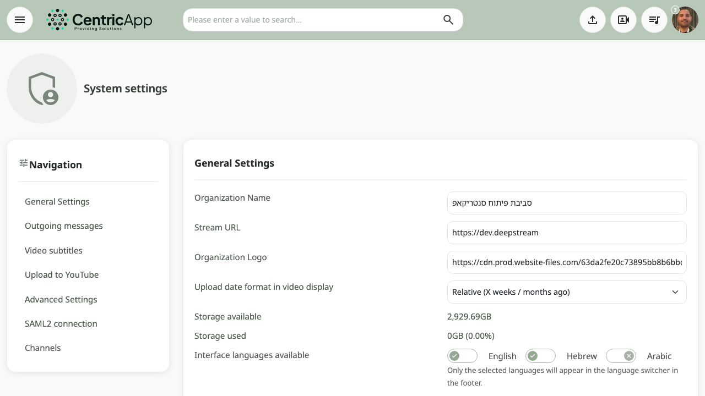

Overview and access
The System Settings page is accessible only to users with administrator permissions. Open it from the main menu (Settings button or dashboard) or at /admin/settings (for example https://dev.video/admin/settings).
On the left is navigation by section; in the center are all settings areas. After making changes, click Save at the bottom.

General settings
In the General settings area, configure:
- Organization name – appears in the system header.
- Stream URL – base URL of the system (sometimes locked).
- Organization logo – URL for the logo image.
- Upload date format – relative (X weeks ago) or date (31/01/26).
- Storage space – available and used space (in gigabytes and percentage).
- Available interface languages – select languages shown in the language switcher (for example Hebrew, English, العربية).
- Theme (colors) – choose a color template (Soft Coral, Emerald Tech, Ocean Breeze, and more).
Outgoing messages
In the Outgoing messages area, configure:
- Support email address – shown in support areas.
- Allow sending messages after a new video upload – enable/disable.
- Allow sending messages after caption upload – enable/disable.
- Allow sending messages after site registration – enable/disable.
Video captions
In the Video captions area, configure:
- API ID – key for the automatic caption service (for example OpenAI).
- Enable automatic captions – turn on automatic caption generation for videos.
YouTube upload
In the Automatic YouTube upload area, configure Google and YouTube connection:
- YouTube Client ID / Client Secret / Redirect URI – configured in Google Cloud Console.
- Enable automatic YouTube upload – processed videos are uploaded automatically to the channel.
- Upload to YouTube only (no cloud storage) – save only on YouTube, not in local cloud.
- Use regular player for YouTube videos – play via the system player (yt-dlp) or embedded YouTube player.
- YouTube account authentication – connection status (connected / not connected) and Connect to YouTube or Manage button for the authentication page.
Advanced settings
In the Advanced settings area, configure among other things:
- Default slide URL – fixed image when there is no poster.
- Enable autoplay – whether the video starts playing automatically.
- Hide public embed button – hide the embed button.
- Enable timeline comments – questions/comments during playback.
- Enable comments system – comments/notes system.
- Allow new user registration – self-registration.
- Allow SSO authentication – single sign-on.
- Enable public mode – public access to content.
- Automatically activate users on registration – automatic activation without admin approval.
- Enable automatic poster image generation – automatic poster from the video.
- Single version per recording only – archive and replace duplicate versions of the same recording.
SAML2 connection
In the SAML2 connection area, configure single sign-on (SSO) with a SAML2-compatible IdP:
- Generate certificate (SP) – create private key and certificate (saml.pem, saml.crt) and update authsources.php.
- Download metadata (SP) – download the SP XML file to provide to the IdP.
- Upload metadata (IdP) – upload the IdP metadata XML file.
Connection status (certificate, IdP configured) is shown at the top of the area.
For the full process, SAML URLs, and Microsoft Entra ID (365) connection, see the SAML2 connection guide for administrators.
Channels
In the Channels area, manage the channel list shown on the home page and in filters. You can add channels and change order (drag). The Manage featured channels link leads to the featured channels management page.
Saving
After updating settings, click the Save button at the bottom of the page. A "Data saved successfully" message appears if saving succeeded. SAML2 actions (generate certificate, upload metadata) are performed by clicking the relevant buttons and redirect with a status message.